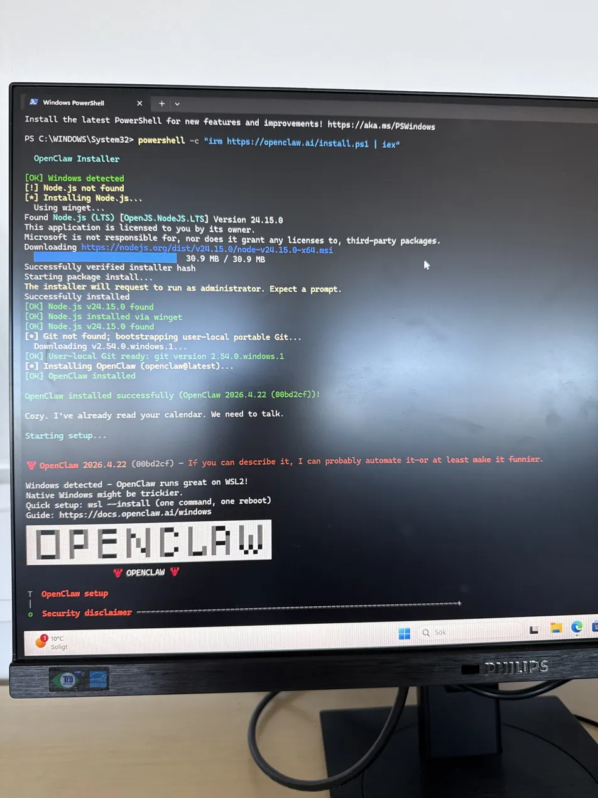
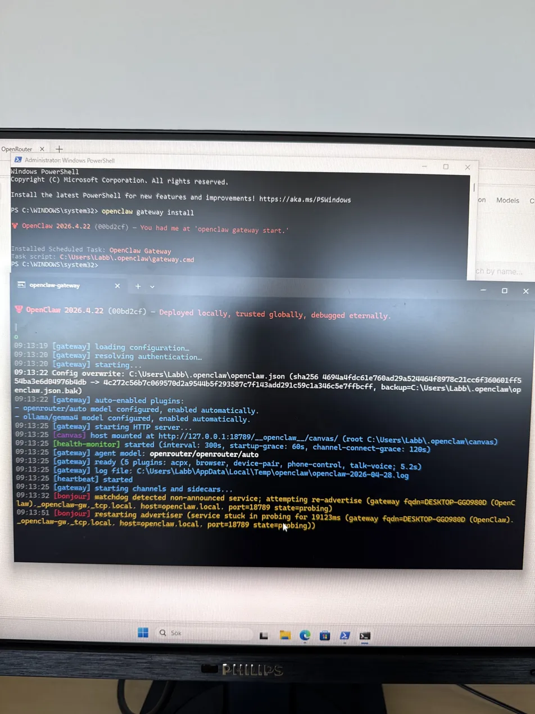
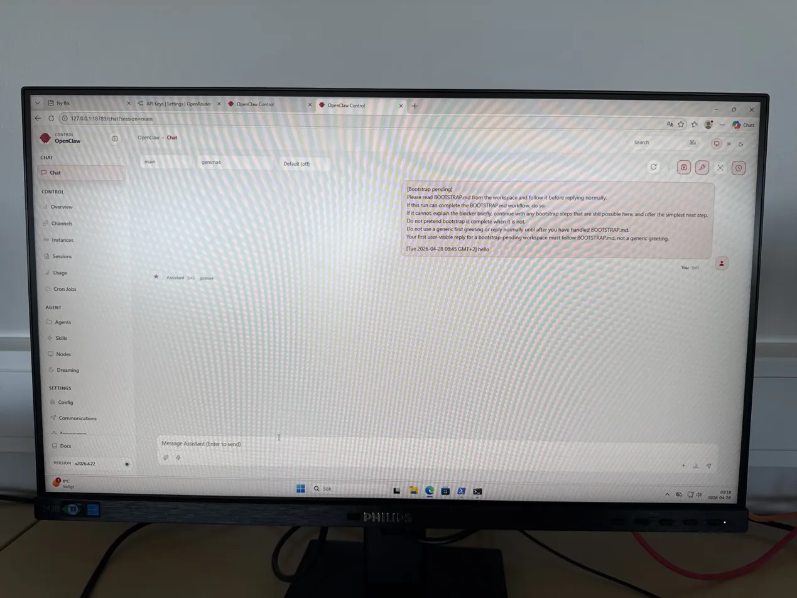

What is OpenClaw?
OpenClaw is a free, open-source AI agent that runs locally and can take actions on your computer — not just generate responses. It's not another chatbot competing with tools like ChatGPT or Claude, but part of a new wave of AI agents that don't just respond, they actually act.
OpenClaw functions as a local gateway that gives AI models direct access to read and write files, run scripts, and control browsers through a secure sandbox. Many describe it as "self-improving" because it can autonomously write code to create new skills, implement proactive automation, and maintain long-term memory of user preferences.
Official GitHub: github.com/openclaw/openclaw
Documentation: docs.openclaw.ai
History
OpenClaw was developed by Austrian developer Peter Steinberger and first published in November 2025 under the name Clawdbot. The project went through three name changes in three months:
- Clawdbot — November 2025
- Moltbot — January 2026
- OpenClaw — January 30, 2026 (with a lobster as mascot, symbolizing growth)
It reached 100,000 GitHub stars in roughly three months — one of the fastest growth curves in GitHub history. On February 14, 2026, Steinberger announced he would be joining OpenAI, and that a non-profit foundation would provide future stewardship of the project.
How Does It Work?
OpenClaw is an agentic interface for autonomous workflows. Bots run locally and integrate with an external large language model. Configuration data and interaction history are stored locally, enabling persistent and adaptive behavior.
Supported Models
Claude, GPT-4, Gemini, DeepSeek, and local models via Ollama
Messaging Channels
Telegram, Discord, WhatsApp, Signal, Slack, Teams, and 15+ more
Skills System
Plugin directories with SKILL.md files — 13,000+ community-built skills
Persistent Memory
Recalls past interactions over weeks and adapts to user habits
What Can It Do?
Users have documented OpenClaw performing real-world tasks including automated browsing, scheduling, agentic shopping, and managing emails on a user's behalf.
- Automated web browsing and data extraction
- Document summarization (PDFs, HTML, etc.)
- Calendar scheduling and reminders
- Agentic shopping and task orchestration
- Email and message management
- Long-term memory for personalized behavior
Cost MIT License
OpenClaw itself is free and open source. You pay only for LLM API usage — roughly $10–20/month for light users, up to $100+/month for heavy usage. Alternatively, use a free local model via Ollama at zero cost.
Popular API Providers
OpenRouter My Setup
Free tier available with models like Qwen3-coder. Routes to many providers. Easy API key setup.
Anthropic (Claude)
High quality, great for complex tasks. Pay-per-use, no free tier. ~$3–15 per million tokens.
OpenAI (GPT-4)
Most widely used. Strong coding ability. Pay-per-use, ~$2–30 per million tokens.
Google (Gemini)
Free tier via Google AI Studio. Fast and capable, good for everyday tasks.
Ollama (Local)
Completely free. Runs models like Llama 3.1 locally on your own hardware. No internet needed.
DeepSeek
Very cheap API, strong at coding tasks. ~$0.14 per million tokens for DeepSeek-V3.
Installation
The easiest way to get started is via the terminal. The onboard wizard guides you through setting up the gateway, workspace, channels, and skills.
npm install -g openclaw@latest
# or:
pnpm add -g openclaw@latest
openclaw onboard --install-daemonHow I Built My Local AI Setup
I set up OpenClaw from scratch on a Windows machine, working through several challenges to get a fully local AI agent running. I did this with the help of Claude and used it as a sort of coach to guide me through the setting up process. After generating the code for the website with Openclaw i used Claude to help me find the right pictures to use and then implementing them in the website, then I finally used Claude to make the website nicer and better, you can view Openclaws version by clicking on the "old version" button.
Installation via PowerShell
Used the official OpenClaw installer script which automatically downloaded Node.js and Git, then installed OpenClaw itself.
Fixing PowerShell Execution Policy
Had to run Set-ExecutionPolicy RemoteSigned to allow scripts to run on Windows.
Configuring a Free AI Model
Installed Ollama and configured OpenClaw to use OpenRouter with the free Qwen3-coder model via OpenRouter's API.
Starting the Gateway
Installed the OpenClaw Gateway as a background service (required admin PowerShell), giving access to the local web dashboard at 127.0.0.1:18789.

The OpenClaw installer running in PowerShell, automatically downloading Node.js and setting everything up.

The OpenClaw Gateway starting up successfully, showing all services loading and ready.

The OpenClaw web dashboard running locally in the browser, where I can chat with and control the AI agent.